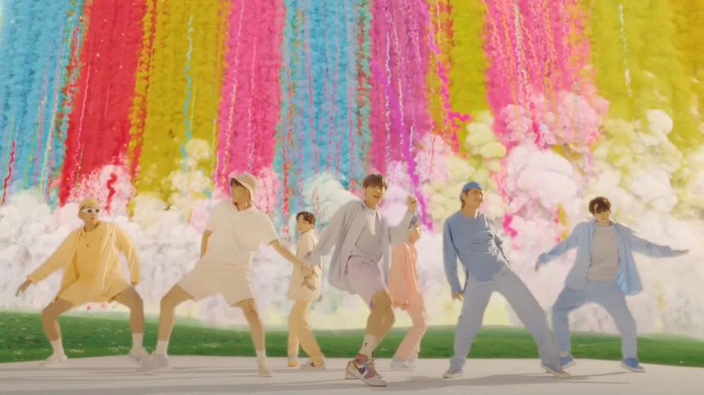

지난 4월의 일입니다. 세월호 참사 6주기를 앞두고 세월호 희생자 유족들을 인터뷰하던 중, 그들의
입에서 뜻밖의 이름이 흘러나왔습니다. 사연은 이러했습니다. 2014년 세월호 참사 뒤 200일가량
지났을 때, ‘젊은 친구들’이 유족들을 찾아왔다고 합니다. 그들은 예의를 갖춰 분향하고, 유족들을
위로하고 돌아갔습니다. 가족협의회 앞으로 1억원을 기부하기도 했답니다.
유족을 찾은 이들은 당시 데뷔 2년차 아이돌 그룹, 방탄소년단(BTS)이었습니다
소속사 대표인 방시혁 빅히트엔터테인먼트 의장도 당시 함께 자리했다는 게 유족의 설명입니다.
세월호 참사와 관련해 정권 차원의 문화계 블랙리스트가 작성되고,
각종 불이익이 가해졌던 상황에서도 아랑곳하지 않고 소신 있게 행동한 그들이 유족들로선 “참으로 고마웠다”고 합니다.
유족들이 그날 이후로 “그들의 미래를 위해 간절히 기도하고, 응원”한 이유입니다.
비통에 잠긴 자신들을 찾아와 마음을 다해 위로해준 이들이 다른 누구보다 사랑받는 가수가 되길 바란 것은 어쩌면 당연한 일이었을 겁니다.
안녕하세요. 문화부에서 대중음악을 담당하고 있는 김경욱입니다.
지난여름 이 코너를 통해 혼성그룹 ‘싹쓰리’(이효리, 유재석, 비)의 인기 비결에 대해 말씀을 드렸는데요,
“오늘은 방탄소년단에 대한 이야기를 전해드리려고 합니다.”
올해는 사실상 ‘방탄소년단의 해’였다고 해도 과한 말이 아닙니다. 최근 그들이 세운 ‘최초’ ‘최고’ ‘최단 기간’ 기록은 관련
기사를 쓰는 기자 입장에서도 실로 헤아리기 어려울 정도입니다. 앞서 말씀드린 세월호 참사 유족들의 바람이 이뤄진 셈이죠.
데뷔 초반부터 주변 상황에 신경 쓰기보다는 자신들의 길을 묵묵히 걸어온 이들이 한국 대중음악의 역사를 새로 쓰기까지 걸린 시간은 불과 7년에 불과합니다.
이들이 최근 이뤄낸 각종 기록 가운데 대표적인 성과는 미국 빌보드 싱글차트(‘핫100’) 1위입니다. 이들에 앞서 이 차트 1위를 한 한국 대중가수는 없었습니다.
지난 9월 영어 노래인 ‘다이너마이트’로 1위에 오르더니, 지난달 30일(현지시각)에는 한국어 노래인 ‘라이프 고즈 온’으로도 1위에 올랐습니다.
이제 이들에게는 어떤 언어로 노래하느냐는 크게 중요한 문제는 아닌 듯합니다. ‘핫100’은 팝의 본고장인 미국에서 가장 인기 있는 ‘노래’를 보여주는 지표입니다.
이 차트에서 한국어로 된 곡이 1위에 오른 것은 빌보드 차트 62년 역사상 이번이 처음입니다.
비영어권 곡이 차트에 데뷔하자마자 1위를 한 것도 ‘라이프 고즈 온’이 유일합니다.


방탄소년단은 새 앨범과 수록곡으로 각각 빌보드 양대 메인 차트를 동시에 석권하는 진기록도 세웠습니다.
‘라이프 고즈 온’이 타이틀곡으로 담긴 앨범 <비>(BE)는 앨범 차트인 ‘빌보드200’에 데뷔와 동시에 1위에 올랐는데요.
지금까지 ‘핫100’과 ‘빌보드200’에서 진입과 동시에 모두 1위를 한 가수는 미국 팝스타 테일러 스위프트와 방탄소년단뿐입니다.
방탄소년단은 어떻게 이런 성과를 낼 수 있었을까요? 독보적 음악과 퍼포먼스, 팬덤 ‘아미’의 힘 등 다양한 요인이 있겠지만, 저는 그들이 세상에 전한 ‘위로’와 ‘희망’을 꼽고 싶습니다.
그들이 데뷔 초창기 때부터 행동으로 보여준 바로 그 가치인 거죠. ‘핫100’ 1위에 오른 ‘다이너마이트’와 ‘라이프 고즈 온’은 모두 코로나19 시대를 사는 이들에게 전하는 위로의 메시지를 담은 곡입니다.
‘다이너마이트’가 밝고 경쾌한 톤의 ‘힐링송’이라면, ‘라이프 고즈 온’은 서정적인 분위기로 ‘그럼에도 삶은 계속된다’는 메시지를 전합니다.
미국 시사주간지 <타임>의 평가도 크게 다르지 않습니다.
<타임>은 10일(현지시각) 방탄소년단을 ‘올해의 연예인’으로 선정하며, 그 이유를 이렇게 들었습니다.
“그들은 고통과 냉소가 가득한 시기에 친절, 연결, 포용이라는 메시지에 충실했고, 팬덤은 이들의 긍정 메시지를 세계로 전파했다.”
이제 시선은 미국 최고 권위의 대중음악 시상식인 ‘그래미상’으로 쏠립니다. 방탄소년단은 ‘다이너마이트’로 ‘베스트 팝 듀오/그룹 퍼포먼스’ 부문 후보에 올라 있습니다.
한국 대중음악인이 이 시상식 후보에 오른 것 역시 방탄소년단이 처음입니다. 시상식은 다음달 31일 열리는데 여러 전문가가 이들의 수상을 점치고 있습니다.
물론 한편에서는 방탄소년단이 그래미의 벽을 넘기는 쉽지 않을 거라는 전망도 나옵니다. 변화에 둔감하고 나이 든 백인 남성 중심의 보수적인 시상식이란 이유에서입니다.
다만, 한 가지 확실한 건 있습니다. 그래미는 그래미일 뿐이라는 사실입니다. 그래미 수상 여부와 관계없이, 그들의 노래로 위로받은 이들에게 방탄소년단은 이미 ‘최고의 스타’니까요.